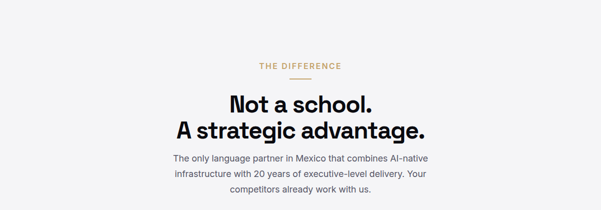
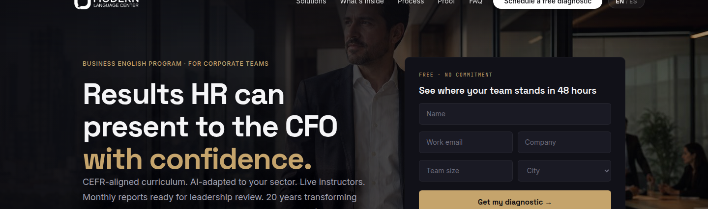
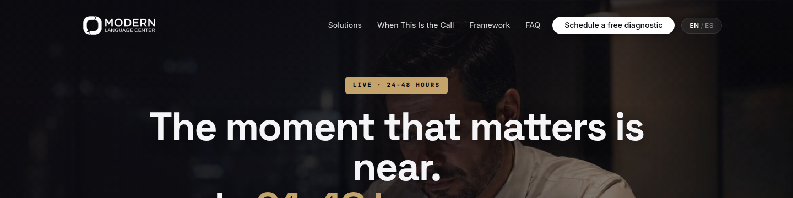
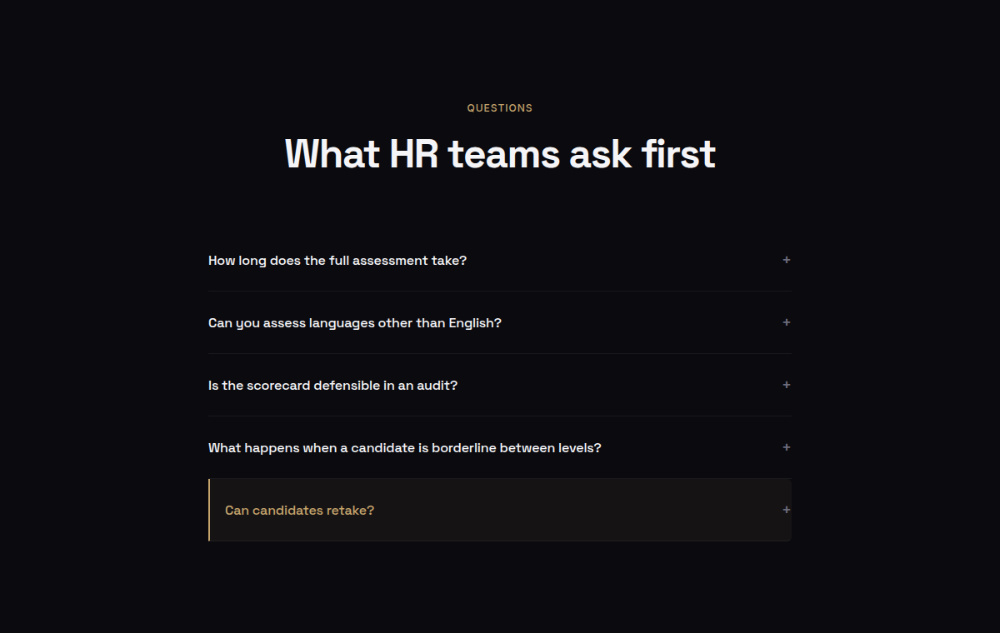
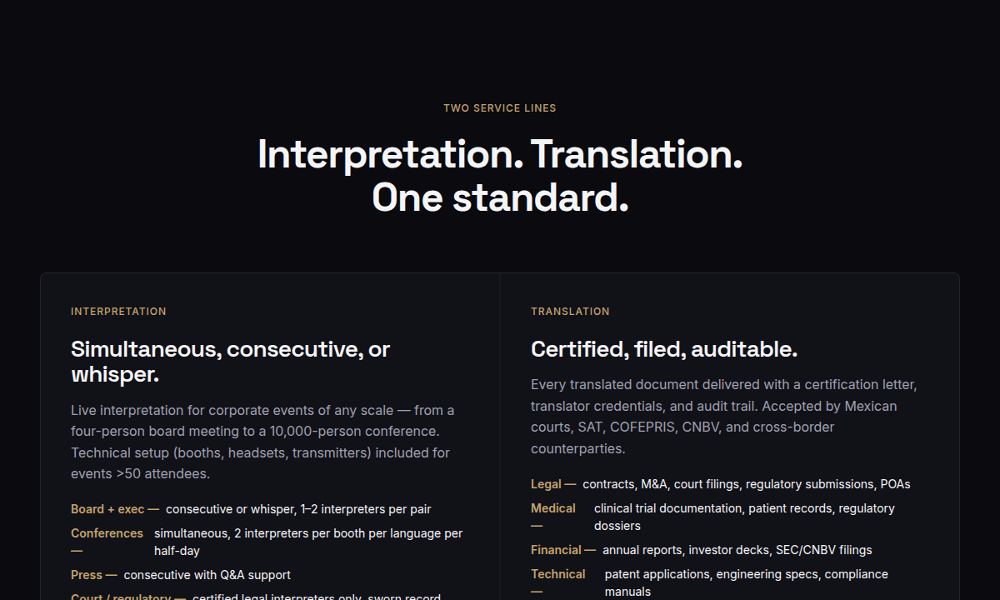
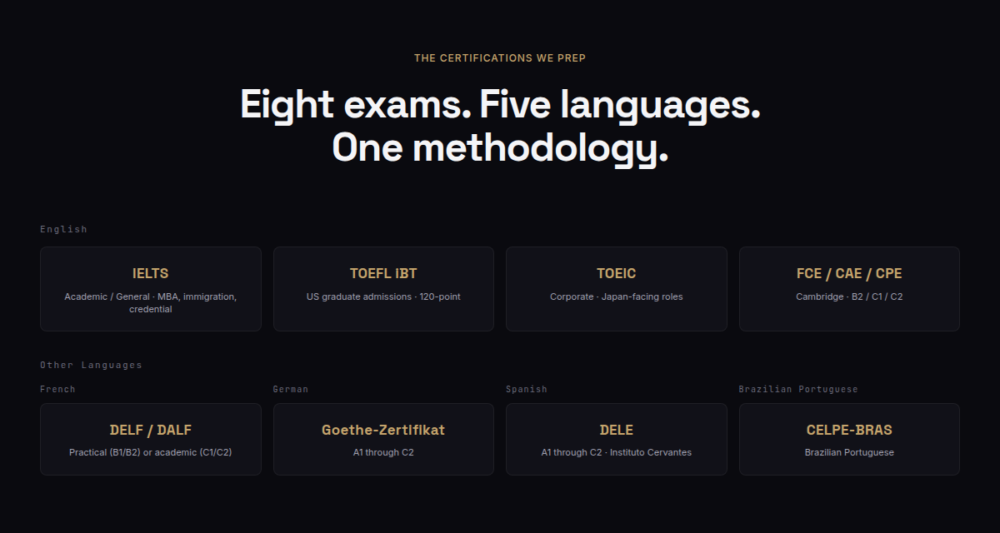

Home
Requested“Aumentar ligeramente el tamaño del logo.” / “La opción para seleccionar Español no es visible; revisar contraste, tamaño o ubicación.”
DeliveredNav logo enlarged (38px → 46px). The Spanish toggle was nearly invisible (40% opacity); raised to high-contrast weight so EN and ES both read as tappable. Applies on every page.
Requested“Resaltar el texto ‘LA DIFERENCIA’ con un tamaño de fuente mayor o mediante otro recurso visual que le dé más protagonismo.”
DeliveredThe eyebrow is now larger and bolder with a drawn gold underline rule, making it a clear section signpost.

Click to enlarge ↗Requested“Usar el espacio en blanco para crear un cuarto diferenciador: Capacitación Tan Personalizada Como Tu Negocio.”
DeliveredA new whitespace-forward homepage section with the headline, three differentiators, and the closing line — its own layout, fully bilingual.
Solution pages
Requested“Cambiar título: Resultados que RRHH puede presentar con confianza al CFO.”
DeliveredHero retitled to “Results HR can present to the CFO with confidence.” (and the verbatim Spanish), gold accent preserved.

Click to enlarge ↗Requested“Mantener uniformidad con el color dorado del resto de la imagen.”
DeliveredThe hero badge used an off-brand amber (#F59E0B); unified to the site gold so the accent is consistent.

Click to enlarge ↗Requested“Cambiar texto: La cuenta regresiva ha comenzado.”
DeliveredThe urgency eyebrow now reads “The countdown has begun.” / “La cuenta regresiva ha comenzado.” — its amber unified to gold. (The reworked privacy line is visible below the form.)
Requested“Resaltar: ¿Pueden los candidatos volver a tomar la prueba?”
DeliveredThe retake question now stands out with a gold accent (left bar, tint, gold text), and its Spanish was corrected to the full phrasing.

Click to enlarge ↗Requested“Diseño: Dividir en dos columnas.”
DeliveredThe two service lines were not actually rendering as two columns (a markup bug nested Translation inside Interpretation, leaving the right column empty — visible in the Before). Fixed: Interpretation and Translation now sit side by side.

Click to enlarge ↗Requested“Cambiar título: Certifica a tu equipo. La garantía de una preparación especializada y de alto impacto.”
DeliveredHero retitled to “Certify your team. The guarantee of specialized, high-impact preparation.” (and the verbatim Spanish).
Requested“Diseño: En dos filas. Revisar el texto en mayúsculas y el uso de colores.”
DeliveredThe eight exams were an uneven 4+1 grid; restructured into two tidy rows of four (English, then other languages). Labels muted so the gold exam names are the focal point.

Click to enlarge ↗Requested“Reemplazar texto: Desde una estancia de una semana… También ofrecemos programas especializados para niños y adolescentes en exclusivos internados en el extranjero.”
DeliveredLead replaced with the expanded audience copy (executives, managers, directors, undergraduate/graduate students, plus dedicated children & teen programs).
Requested“Canadá.”
DeliveredCanada is already the flagship destination — the year-abroad program is built on top Canadian boarding schools and the destinations feature Canada prominently (below). No copy was invented; flagged to confirm whether stronger emphasis is wanted.
Copy & consistency
Home · process headline (Spanish)
✓ LIVETu junta directiva preguntará cómo mediste esto. Aquí está tu respuesta.
Tu junta directiva preguntará cómo mediste esto. Aquí está la respuesta.
Home · AI personalization line
✓ LIVENuestra IA adapta cada lección a tu sector — farmacéutica, finanzas, automotriz, tecnología, consumo.
Nuestra IA adapta cada lección a tu sector: farmacéutica, finanzas, automotriz, tecnología o consumo.
Site-wide · contact-form privacy line (9 places)
✓ LIVE…Your data stays with MLC — we don’t sell leads.
Your privacy is our priority; we never share your data. / “Tu privacidad es nuestra prioridad; nunca compartimos tus datos.”
Home + all CTAs · remove em-dashes
✓ LIVE“Live sessions — on-site, remote, or hybrid — with real-time QC.”
“Live sessions (on-site, remote, or hybrid) with real-time QC.” — homepage now em-dash-free in EN and ES.